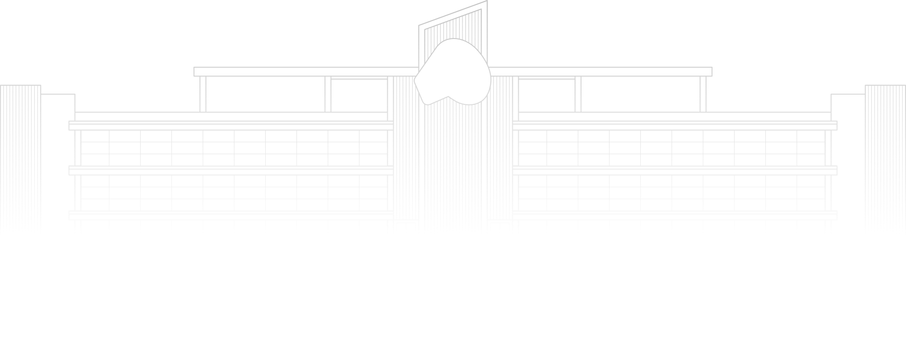

ETL I
Fontes e Integração
Rodrigo Nicola
A responsabilidade pela idoneidade, originalidade e licitude dos conteúdos didáticos apresentados é do professor.
Proibida a reprodução, total ou parcial, sem autorização.
Lei nº 9610/98
O mundo dos notebooks
CRISP-DM
Da pergunta ao uso
Seis etapas conectadas pelos dados.
O processo permite voltar e revisar decisões.
CRISP-DM · adaptado de Chapman et al., 2000
De onde vêm os dados do CSV?
ETL
Extrair
Obter dados
das fontes
Transformar
Adequar os dados
ao uso
Carregar
Gravar os dados
no destino
Kimball e Caserta · The Data Warehouse ETL Toolkit, 2004
Duas fontes, um CSV
Carga elétrica
Temperatura
Extrair e combinar
Carga + temperatura
Fontes: ONS · Curva de Carga e Open-Meteo · Historical Weather.
O banco da carga
bancocurva
schemaoficial
curva_horariaRecorte da Curva de Carga do ONS
schemameta
provenienciaDe onde veio o recorte
No psql: \dn lista os schemas · \dt oficial.* lista as tabelas
A tabela da carga
oficial.curva_horaria uma linha por subsistema e hora · 672 linhas
| id_subsistemachave | text | Código do subsistema |
| nom_subsistema | text | Nome do subsistema |
| din_instantechave | timestamp | Data de referência |
| val_cargaenergiahomwmed | numeric | Carga de energia, em MWmed |
Descrições: dicionário de dados do ONS · Curva de Carga
Extrair a carga
A resposta da Open-Meteo
latitude e longitude são do ponto da grade, não as pedidas
A unidade vem separada, em hourly_units
hourly traz listas paralelas: a posição liga hora e valor
Trecho de uma resposta real, 01/01/2025 · Weather data by Open-Meteo.com
Extrair o clima
O playground
playground/
├── aula1/o código desta aula
│ ├── extrair_carga.py
│ ├── extrair_clima.py
│ └── combinar.pyo desafio
├── aula2/próxima aula
├── saida/o que vocês geram
├── compose.yamlos serviços do laboratório
└── preparar.shrode no começo de cada aula
Desafio · carga + temperatura
| id_subsistema | instante | carga_mwmed | temperatura_c |
|---|---|---|---|
| N | 2025-01-01 00:00:00 | 7097.75099999 | 24.0 |
| N | 2025-01-01 01:00:00 | 7053.337 | 23.9 |
| … | … | … | … |
Comece por aula1/combinar.py · 60 min
Solução · carga e clima
Solução · juntar e gravar
Peças que se encaixam
(fontes, destino, período)extrair(inicio, fim)
extrair(inicio, fim)
respostas salvas, sem internet
gravar(dados)
próxima aula
O pipeline só conhece contratos
Trocar a peça, não o pipeline
Obrigado!
Rodrigo Nicola
Referências e dados
Chapman, P. et al. (2000). CRISP-DM 1.0: Step-by-step data mining guide
Kimball, R.; Caserta, J. (2004). The Data Warehouse ETL Toolkit. Wiley.
ONS — Curva de Carga Horária e dicionário de dados
Weather data by Open-Meteo.com (CC BY 4.0) — Zippenfenig, P. (2023), doi:10.5281/ZENODO.7970649
Hersbach, H. et al. (2023). ERA5 hourly data on single levels. ECMWF. doi:10.24381/cds.adbb2d47
Documentação: Psycopg 3 · HTTPX · pandas.DataFrame.merge